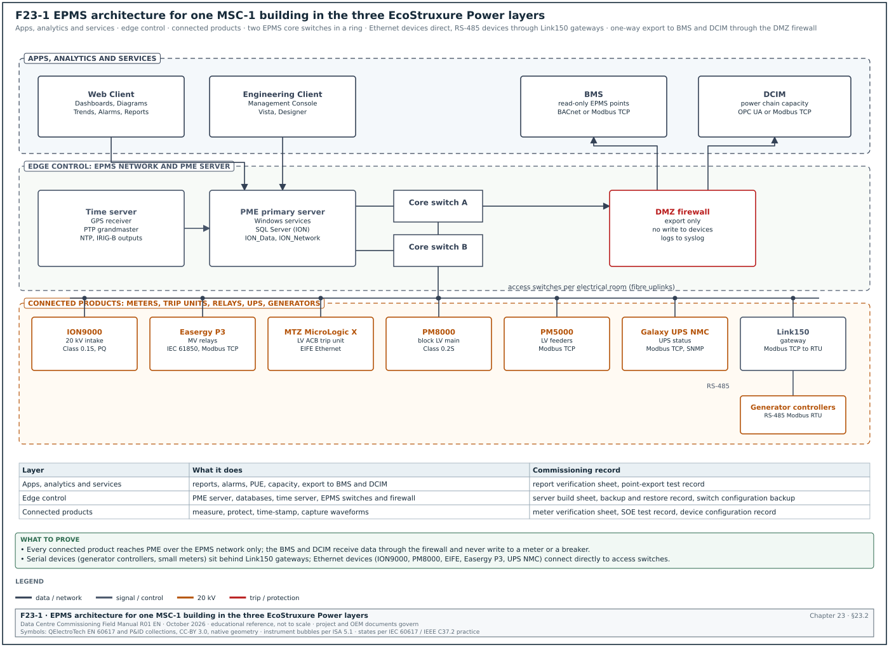
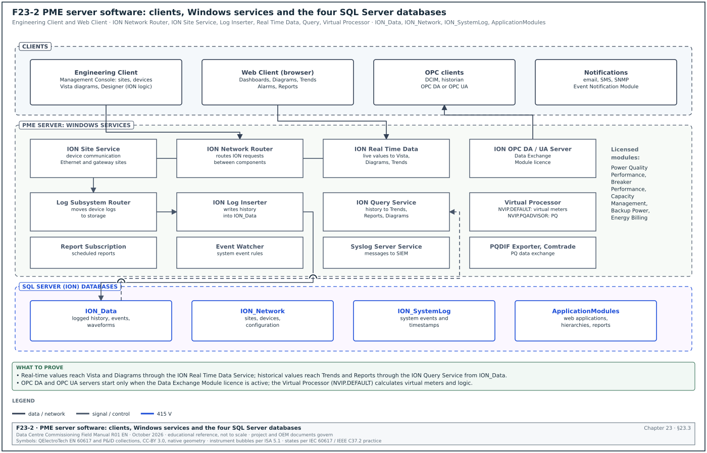
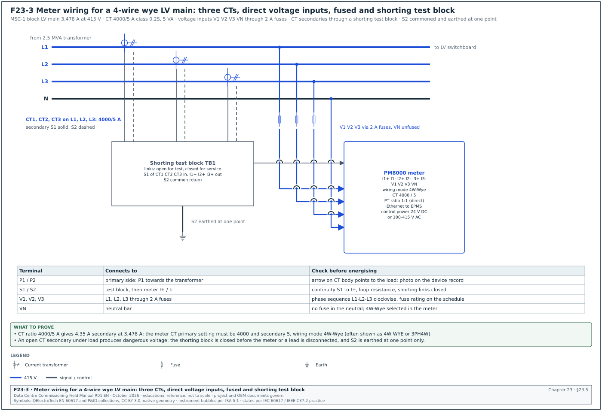
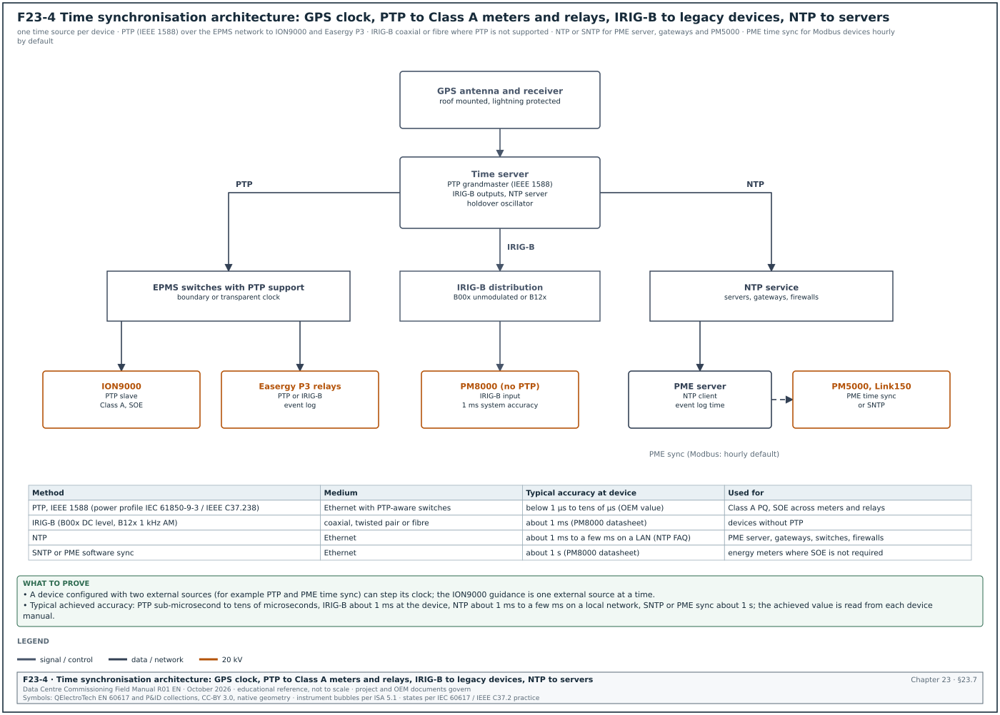
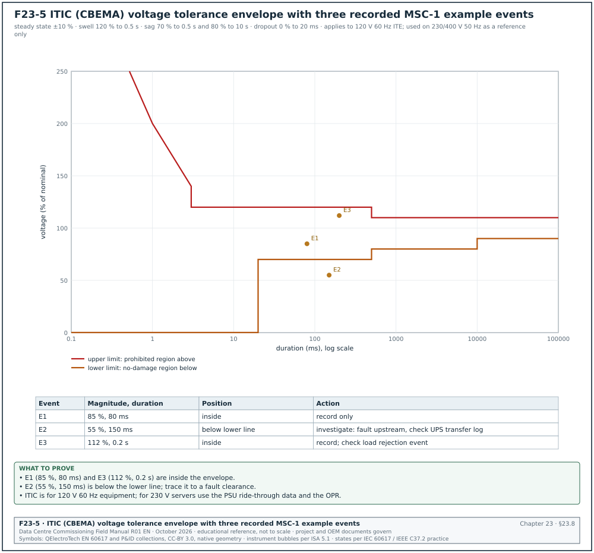
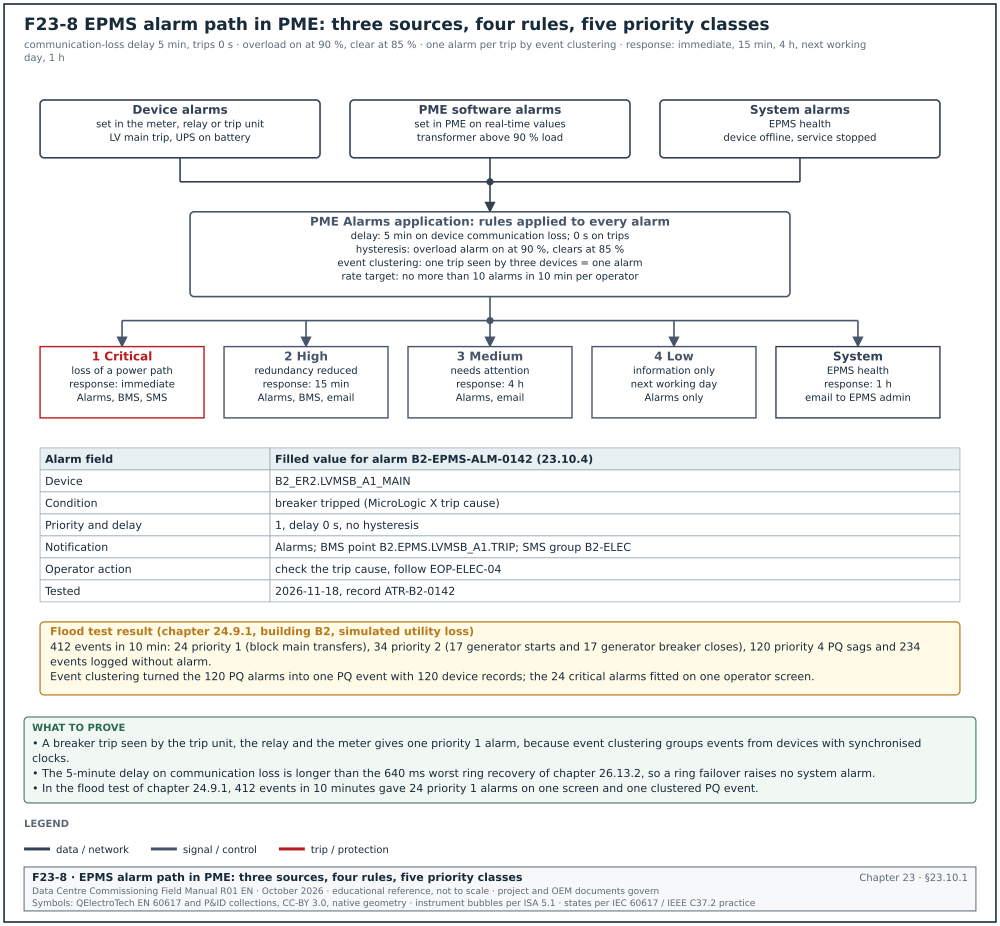
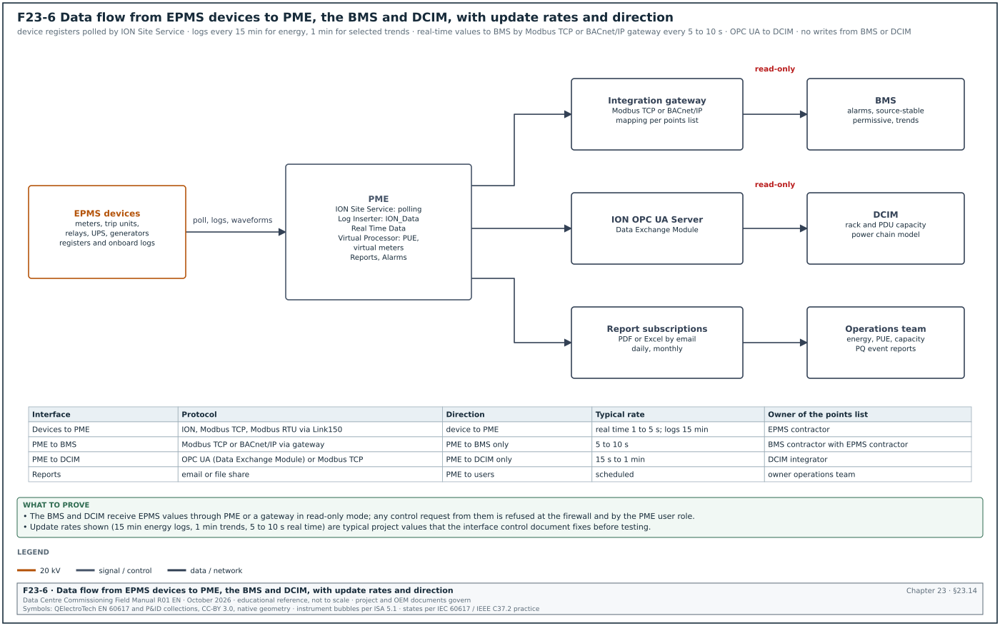
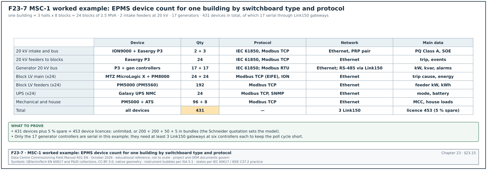

23.0Scope of this chapter
This chapter describes what an electrical power monitoring system (EPMS) is on a hyperscale data-centre campus and how Schneider Electric EcoStruxure Power Monitoring Expert (PME) is built. It also lists the field devices, gateways, protocols and time sources that feed PME. Chapter 24 gives the commissioning procedure that tests every part described here. Chapter 26 covers the operational technology (OT) network and the fibre and copper cabling that the EPMS uses.
- System purpose and boundaries. The difference between the EPMS, the building management system (BMS) and data-centre infrastructure management (DCIM), and which system owns which data.
- EcoStruxure Power architecture. The three layers that Schneider uses (connected products, edge control, apps, analytics and services) applied to one building of the MSC-1 campus.
- PME server software. Engineering Client, Web Client, the Windows services, the four SQL Server databases, the Virtual Processor and the licensed software modules. The names follow the PME 2023 and PME 2024 online help.
- Field devices. PowerLogic ION9000, PM8000 and PM5000 meters, MasterPact MTZ breakers with MicroLogic X trip units, and ComPacT and PowerPacT moulded-case breakers. The chapter also covers Easergy P3 protection relays, Galaxy uninterruptible power supply (UPS) network management cards, generator controllers and automatic transfer switches (ATS).
- Instrument transformers and meter wiring. Current transformer (CT) and voltage transformer (VT) selection, wiring modes and the shorting test block.
- Gateways and protocols. The Link150 and Com'X gateways. The protocols are Modbus Transmission Control Protocol (TCP) and Modbus remote terminal unit (RTU), ION protocol, IEC 61850, BACnet/IP, Open Platform Communications (OPC) Data Access (DA) and OPC Unified Architecture (UA), Simple Network Management Protocol (SNMP) and syslog.
- Time synchronisation. Global Positioning System (GPS) clocks, Precision Time Protocol (PTP, IEEE 1588), IRIG-B, Network Time Protocol (NTP) and the sequence-of-events (SOE) resolution each one supports.
- Power quality. Waveform capture, IEC 61000-4-30 Class A measurement, the Information Technology Industry Council (ITIC) curve (formerly the Computer and Business Equipment Manufacturers Association (CBEMA) curve) and SEMI F47.
- Data model, alarms, reports, licensing, redundancy and cybersecurity. How data is logged, named, grouped, alarmed, reported, licensed, backed up and protected.
- Worked examples. EPMS device count and gateway list for one MSC-1 building, CT sizing for a block low-voltage (LV) main, licence sizing and network load.
Schneider Electric documents used: PME 2023 and PME 2024 online help, PowerLogic ION9000, PM8000 and PM5000 datasheets and user guides, MasterPact MTZ Modbus Communication Guide, Link150 datasheet and Easergy P3 product data. Standards and other documents used: IEC 61000-4-30 (Edition 4.0, 2025), IEC 62053-22, IEC 61869-2, IEEE 1588-2019, IEC 61850-9-3, IEEE C37.238, the ITI (CBEMA) curve application note, ANSI/ASHRAE 135 (BACnet), IEC 62443-3-3, and the MSC-1 case ledger.
23.1EPMS purpose and the boundary with BMS and DCIM
23.1.1What the EPMS does
An EPMS measures, records and reports the electrical state of the power system from the utility intake to the rack power distribution. On a data-centre campus it has six jobs.
- Measure electrical quantities. Voltage, current, active and reactive power, energy, frequency, power factor, harmonics and unbalance at every metered point on the single-line diagram. The measurement is used for billing, capacity planning and power usage effectiveness (PUE).
- Record events with a common time. Breaker trips, protection operations, transfer switch operations, UPS mode changes and voltage disturbances are time-stamped by the device and collected into one event log. The common time base lets the operator rebuild the order of events after an incident.
- Capture power quality (PQ) disturbances. Sags, swells, transients and interruptions are recorded as waveforms and classified against a tolerance curve.
- Alarm the operator. PME raises alarms on overload, breaker trip, loss of supply, communication failure and power quality events in the PME Alarms application. It passes them to the BMS or a notification service.
- Report. Energy, PUE, capacity, breaker settings and power quality reports are produced on a schedule and on demand.
- Feed other systems. The BMS receives a small set of read-only points (for example a "source stable" permissive after a generator transfer). DCIM receives power data for rack and power-chain capacity.
23.1.2Ownership of data between EPMS, BMS and DCIM
The table is the boundary agreed on most hyperscale programmes. The interface control document (ICD) for each project records the final version (chapter 25).
| Data or function | EPMS (PME) | BMS | DCIM |
|---|---|---|---|
| Electrical measurements at switchboards | owner, source of record | read-only copy of selected points | read-only copy for capacity |
| Breaker status and trip cause | owner | read-only status for alarms | read-only for power chain model |
| Power quality waveforms and events | owner | not received | summary only |
| Mechanical plant control (pumps, computer room air handlers (CRAH), coolant distribution units (CDU)) | not involved | owner | read-only |
| Rack power distribution unit (PDU) and branch circuit data | where metered by EPMS devices | not involved | owner of the rack model |
| Energy and PUE reports | owner of electrical energy data | supplies mechanical sub-meters if any | dashboard user |
| Control commands to breakers | only when the specification allows, under a separate permit | never | never |
Check: On a correct design, no BMS or DCIM point can write to a breaker, a relay or a meter setting. Ask the integrator to show the write permissions in the gateway mapping file and in the PME user roles before the integration test.
23.1.3Why the EPMS uses its own network and server
The EPMS sits on its own network segment for three reasons. First, the protection relays and trip units on the EPMS network take part in the electrical protection system, and their configuration must be changed only by authorised electrical staff. Second, time synchronisation by Precision Time Protocol (PTP) needs switches that support PTP and a controlled network load. Third, the cybersecurity zone model of IEC 62443-3-3 separates systems with different consequences of failure into separate zones joined by conduits with defined flows. Chapter 26 gives the network design.
23.2EcoStruxure Power architecture in three layers
Schneider Electric describes EcoStruxure Power in three layers. Figure F23-1 applies them to one MSC-1 building.


| Layer | Schneider name | Items on the MSC-1 building | Typical owner during construction |
|---|---|---|---|
| 1 | Connected products | ION9000 and PM8000 meters, PM5000 meters, MasterPact MTZ with MicroLogic X, ComPacT NSX, Easergy P3 relays, Galaxy UPS network management cards, generator controllers, ATS controllers | switchboard manufacturer and EPMS contractor |
| 2 | Edge control | PME server, SQL Server, EPMS switches, Link150 and Com'X gateways, time server, firewall | EPMS contractor and network contractor |
| 3 | Apps, analytics and services | PME Web Applications (Dashboards, Diagrams, Trends, Alarms, Reports), software modules, report subscriptions, exports to BMS and DCIM | EPMS contractor, then the owner operations team |
23.2.1Connected products layer
Every device in this layer measures or protects and has a communication port. The device keeps its own logs (energy, events, waveforms) in memory. Onboard logging is what allows data to be recovered after a network outage, so the specification must require it for every meter that feeds billing or PUE.
23.2.2Edge control layer
The edge control layer is the PME server and the network that carries device data to it. On a hyperscale campus the usual practice is one PME server per building or per campus phase, with a separate reporting or historian server in the OT demilitarised zone (DMZ). The server is a virtual machine on a resilient host or a physical server with redundant power supplies and disks.
23.2.3Apps, analytics and services layer
This layer is where users work: the Web Client in a browser, scheduled reports, notifications and exports. In the MSC-1 worked example, the operations team uses Dashboards for PUE, the Alarms application for events, and Reports for monthly energy and capacity.
23.2.4Steps to set out the architecture at design review
Purpose: Confirm at the design stage that the EPMS architecture can be commissioned and operated.
Owner: Commissioning manager (CxM), with the electrical engineer of record (EoR) and the EPMS contractor.
Trigger: Issue of the EPMS design submittal (for example the 60 % design stage).
Steps:
- Obtain the submittal set. Request the EPMS riser diagram, meter schedule, points list, network diagram, Internet Protocol (IP) address plan, time synchronisation diagram and server specification. Allow the EPMS contractor 10 working days to issue them after the request.
- Check every metered point. Compare the meter schedule against the single-line diagrams. Every incomer, bus section, generator, UPS input and output, block transformer and outgoing feeder above the agreed rating (for example 250 A) must have a device.
- Check the device class. Utility intakes and generator buses need Class A power quality meters (ION9000 class). Block LV mains need revenue-grade meters (PM8000 class, Class 0.2S). Feeders need Class 0.5S or better (PM5000 class).
- Check the network path. Every Ethernet device must connect to an access switch in the same electrical room. Every serial device must connect through a gateway with no more than the number of devices agreed for the poll cycle (see 23.6.4).
- Check time synchronisation. Every device that feeds SOE must have one stated time source (PTP or IRIG-B), and the time server must have a GPS antenna position and lightning protection.
- Check the integration list. The BMS and DCIM points must be listed with protocol, direction, update rate and owner (Figure F23-6).
- Record comments. Return comments within 10 working days in the design review log with a reference to the drawing and the clause of the specification.
Records: Design review comment log, signed comment responses, revised riser diagram.
23.3PME server software: clients, services and databases


23.3.1Clients
PME has two kinds of client. The names below are those used in the PME help and the Schneider licensing frequently asked questions (FAQ).
| Client | What it is | Tools it contains | Licence |
|---|---|---|---|
| Engineering Client | Windows application for configuration and administration; one is installed on the PME server by default | Management Console (sites, devices, gateways, communications), Vista (user diagrams), Designer (ION device and Virtual Processor logic) | the Base licence includes one Engineering Client |
| Web Client | browser access with no installation | Dashboards, Diagrams, Trends, Alarms, Reports (the Web Applications) | the Base licence includes two Web Clients; more are licensed separately |
Source: Schneider Electric FAQ on PME components and licences (see 23.18, items 4 and 5).
23.3.2Windows services
All PME applications without a user interface run as Windows services. Figure F23-2 shows how they connect. The table lists the services checked at commissioning; the full list is in the PME 2024 help page "PME Windows services".
| Service | Function | What to check at commissioning |
|---|---|---|
| ION Site Service | handles packet communication to devices and gateways | running; site status online for every gateway |
| ION Network Router Service | routes ION requests between components | running; no routing errors in the system log |
| ION Log Inserter Service | stores historical data from devices and the Virtual Processor in ION_Data | running; log upload counters rising |
| ION Log Subsystem Router Service | transfers device data to storage and processing | running (delayed start) |
| ION Real Time Data Service | provides live values to Vista, Diagrams and Trends | running; live values update in Diagrams |
| ION Query Service | provides history from ION_Data to clients | running; Trends show history |
| ION Virtual Processor Service (NVIP.DEFAULT) | aggregation, control and mathematical analysis (virtual meters, PUE) | running; virtual meter values match the hand calculation |
| ION Virtual Processor Service (NVIP.PQADVISOR) | data for Power Quality Performance diagrams | running only when that module is licensed |
| ION Report Subscription Service | runs scheduled reports | test subscription received by email |
| ION Event Watcher Service | monitors system events against Event Watcher rules | test rule fires |
| ION OPC DA Server and ION OPC UA Server | serve real-time OPC data | start on client request when the Data Exchange Module licence is active |
| ION PQDIF Exporter Service, ION Comtrade Processor | export power quality data in the Power Quality Data Interchange Format (PQDIF), import waveforms in the Common Format for Transient Data Exchange (COMTRADE) | test export opens in a viewer |
| ION Software Modbus Gateway Service | makes software data available on Modbus TCP | used, for example, by the circuit breaker aging function |
| ION Software ASCO Gateway Service | converts data from ASCO transfer switches | only on projects with ASCO ATS |
| ION Syslog Server Service | sends configured PME messages to a syslog server | message received at the security information and event management (SIEM) server |
| SQL Server (ION) | database engine for ION_Data, ION_Network, ION_SystemLog and ApplicationModules | running; database sizes recorded |
Common errors:
- Services left on Local System after a change. When PME is installed with Windows Integrated Authentication, the Windows account used for the database also runs the services. A password expiry on that account stops all services at the next restart. Check the account policy before handover.
- OPC server not starting. The OPC servers start only on a client request and only with the Data Exchange Module licence. A DCIM integrator who reports "no OPC server" has either not activated the licence or has a firewall blocking the client connection.
- Virtual Processor logic changed without a record. Virtual meters and PUE calculations live in the Virtual Processor. Any change after the report verification test invalidates that test. Keep the Designer framework file under document control.
23.3.3The four databases
PME stores device communication settings, system configuration and logged history in four SQL Server databases.
| Database | Contents | Growth | Backup practice (example; the database maintenance page of the PME help for the installed version gives the project practice) |
|---|---|---|---|
| ION_Data | logged history, events, waveforms, alarms | the largest; grows with the number of devices and logging rate | weekly full, daily differential |
| ION_Network | sites, devices, gateways, communication settings; one per system | small | daily |
| ION_SystemLog | system events with timestamps, visible in Management Console | small to medium | weekly |
| ApplicationModules | Web Applications configuration, hierarchies, dashboards, report definitions | small | daily |
Worked example: ION_Data growth for one MSC-1 building. Assume 431 devices (23.15). Each device logs 20 energy and demand values every 15 minutes, which is 96 records per day per value. One stored value takes about 40 bytes including index overhead (an assumption used for sizing only; measure the real figure after one week of operation). Daily growth = 431 × 20 × 96 × 40 bytes = 33.1 MB per day, or about 12.1 GB per year for interval data. Waveforms add more. This example has 26 ION9000 and PM8000 meters (2 ION9000 and 24 PM8000). If each records 5 waveform captures per day at 100 kB each, waveforms add 13 MB per day, or 4.7 GB per year. Size the ION_Data volume for at least 5 years of growth plus 50 % free space: (12.1 + 4.7) × 5 × 1.5 = 126 GB. The project then rounds up to the SQL Server edition limit and the disk size.
Check: SQL Server Express has a database size limit (maximum relational database size 10 GB, vendor document "Editions and supported features of SQL Server 2022"). A building of the size above needs SQL Server Standard. Confirm the edition on the server build sheet before factory acceptance test (FAT).
23.3.4Software modules
Software modules combine features into a set of deliverables for one application. The PME 2023 help lists the modules below; each needs its own licence unless stated otherwise in the current licence guide.
| Module | Application (Schneider wording, shortened) | Use on a data-centre campus |
|---|---|---|
| Backup Power Module | generator and UPS performance monitoring and reporting, including battery health | generator test reports, UPS battery reports |
| Breaker Performance Module | circuit breaker aging and breaker settings monitoring | MicroLogic X wear and settings reports |
| Capacity Management Module | generator and UPS capacity monitoring and reporting, transformer and UPS loss monitoring | redundancy loading checks for N+1 and 2N blocks |
| Energy Analysis Dashboard Module | gadgets for consumption patterns and comparison | operations dashboards |
| Energy Analysis Reports Module | energy consumption monitoring and modelling | monthly energy report |
| Energy Billing Module | energy-based billing, branch circuit consumption | tenant billing in colocation halls |
| Event Notification Module | notifications by email, short message service (SMS) or SNMP | out-of-hours alarm notification |
| Insulation Monitoring Module | monitoring of isolated power systems | rarely used on data-centre campuses |
| Power Quality Performance Module | analysis of power quality events and their impact | PQ event classification and reports |
PME 2023 also added a Device Replacement Manager, a Device Replacement report and an IEC 61000-2-4 report, and neutral protection settings in the circuit breaker setting report.
23.4Field devices and what each one provides
23.4.1Device families
| Device | Class and main functions (from Schneider datasheets) | Protocols | Typical location on MSC-1 | What to check and record |
|---|---|---|---|---|
| PowerLogic ION9000 | active energy Class 0.1S (IEC 62053-22); IEC 61000-4-30 Class A; transients to 20 µs; waveform capture | ION, Modbus TCP and RTU, IEC 61850, Distributed Network Protocol 3 (DNP3); time sync by PTP, IRIG-B, NTP, Simple Network Time Protocol (SNTP) | 20 kV utility intakes, generator 20 kV bus | PTP lock and the Class A setting, on the device configuration record |
| PowerLogic PM8000 | active energy Class 0.2S; waveform capture in COMTRADE; power quality to IEC 61000-4-30 (Class S or A per model) | ION, Modbus RTU and TCP, IEC 61850, DNP3; NTP and IRIG-B (1 ms system accuracy) | block LV main incomers | IRIG-B source, CT ratio and wiring mode, on the device configuration record |
| PowerLogic PM5000 (PM5560) | active energy Class 0.2S (PM5560); PM5110, PM5330, PM5340 Class 0.5S; harmonics to 63rd | Modbus TCP, BACnet/IP (PM5560), Modbus RTU | LV feeders, mechanical motor control centres (MCC) | protocol option against the order code; CT ratio |
| MasterPact MTZ with MicroLogic X | air circuit breaker trip unit with metering, trip history, wear indicators, settings | Modbus via the IFM interface module (serial), or the IFE or EIFE interface module (Ethernet) | LV main, UPS input and output breakers | interface module type (IFM, IFE or EIFE) and Modbus unit ID |
| ComPacT NSX / PowerPacT with MicroLogic | moulded-case breaker trip unit with metering | Modbus through IFM or IFE | outgoing feeders and busway tap-offs | interface module type and Modbus address |
| Easergy P3 | protection relay with event recorder | IEC 61850 Ed.1 and Ed.2 with generic object-oriented substation event (GOOSE) messages, Modbus TCP, DNP3 TCP, IEC 60870-5-101; Parallel Redundancy Protocol (PRP) and Rapid Spanning Tree Protocol (RSTP) | 20 kV switchgear | IEC 61850 edition and redundancy protocol against the network design |
| Galaxy UPS network management card | UPS status, mode, battery, alarms | Modbus TCP, SNMP | each UPS | Modbus unit ID and SNMP credentials changed from default |
| Generator controller | engine and alternator data, alarms | Modbus RTU on RS-485 (some models Modbus TCP) | each generator | serial address, baud rate and parity against the gateway list |
| ATS controller | transfer status, source availability | Modbus RTU or TCP; ASCO through the ION Software ASCO Gateway Service | house and mechanical loads | protocol against the order code; ASCO gateway service running where used |
Source: ION9000, PM8000 and PM5000 datasheets and FAQs; MTZ Modbus Communication Guide; Easergy P3 product listings (23.18, items 6 to 11). Confirm the protocol options against the order code of each device, because options differ by model.
23.4.2Choosing the device for each point
- Utility intake and generator bus. Use a Class A power quality meter with PTP. The intake meter is the reference for PUE (total facility energy), for utility disputes and for PQ events that come from the grid. In the MSC-1 example the two 20 kV intakes each carry up to 1,334.6 A per feeder (case ledger value).
- Block LV main. Use a revenue-grade meter (Class 0.2S) on dedicated CTs plus the MicroLogic X trip unit data. The trip unit gives trip cause and wear; the meter gives billing-grade energy.
- UPS output. The UPS output energy is the IT energy for PUE in many designs. Use a Class 0.5S or better meter on the UPS output switchboard incomer, or sum the PDU output meters in the Virtual Processor. The PUE method statement defines which method applies (see 23.11).
- Feeders and mechanical loads. Use PM5000-class meters. Mechanical loads (chillers, dry coolers, pumps, CRAH) are metered so that PUE can be split into its parts.
- Generators and ATS. Read the controller over Modbus for status and alarms. Fit a separate meter only where the specification asks for revenue-grade generator energy.
23.4.3Data available from a MicroLogic X trip unit
The trip unit is a protection device first and a meter second. The commissioning team uses its data for three tests in chapter 24: breaker status, trip indication and settings verification.
| Data group | Examples | Used in test |
|---|---|---|
| Status | open, closed, tripped, racked in, racked out, spring charged | point-to-point status test |
| Trip history | trip cause (long-time, short-time, instantaneous, ground fault), trip current, time stamp | trip indication test |
| Settings | Ir, tr, Isd, tsd, Ii, Ig, tg, energy reduction maintenance setting (ERMS) status | breaker settings report against the coordination study |
| Measurements | currents, voltages, power, energy | value cross-check against the meter |
| Wear | contact wear, operation counter | Breaker Performance Module |
23.5Instrument transformers and meter wiring


23.5.1Current transformers
The meter can be no more accurate than its CT. On revenue-grade points the CT accuracy class must match the meter class.
| Item | Rule | Source of the value |
|---|---|---|
| Primary rating | the next standard rating at or above the maximum continuous current | design practice |
| Secondary | 5 A for long leads in LV switchboards; 1 A for medium-voltage (MV) panels and long runs (lower lead burden) | design practice |
| Accuracy class for Class 0.2S meters | CT class 0.2S | IEC 61869-2:2012 Table 202 (special accuracy classes 0.2S and 0.5S) |
| Accuracy class for Class 0.5S meters | CT class 0.5S or 0.5 | IEC 61869-2 |
| Burden | sum of meter input burden, lead burden and test block burden below the CT rated burden | CT nameplate and lead resistance calculation |
| Polarity | P1 towards the source, S1 to the meter I+ terminal | CT nameplate marking |
| Earthing | S2 commoned and earthed at one point only | standard practice |
| Open circuit | the secondary must never be open under load; the test block shorts the CT first | electrical safety |
The special classes have tighter limits at low current than the standard classes. A university laboratory summary of PN-EN 61869-2 (the Polish adoption of IEC 61869-2) gives the class 0.2S ratio error limits. They are ±0.75 % at 1 %, ±0.35 % at 5 % and ±0.2 % at 20 % and 100 % of rated current. The phase displacement limits are 30, 15 and 10 minutes. Its 120 % column differs from vendor tables that also give ±0.2 %, so confirm the 120 % value against IEC 61869-2:2012 Table 202 before quoting it in a specification.
Worked example: CT for the MSC-1 block LV main. The block transformer is 2.5 MVA at 415 V. Full-load current I = 2,500,000 / (√3 × 415) = 3,478 A (case ledger value). The next standard primary rating is 4,000 A, so the CT is 4000/5 A. At full load the secondary current is 3,478 / 4,000 × 5 = 4.35 A. At 10 % load (348 A) the secondary current is 0.43 A. This is above 50 mA, the lower end of the PM8000 measured current range (Schneider FAQ FA244498). Burden check: 2 × 6 m of 4 mm² copper at 75 °C gives about 2 × 6 × 0.0055 Ω = 0.066 Ω. At 5 A that is 5² × 0.066 = 1.65 VA. The PM8000 current input burden is 0.024 VA at 10 A (Schneider FAQ FA244498), and the test block adds about 0.1 VA. Total about 1.8 VA, so a CT rated 5 VA, class 0.2S has margin.
23.5.2Voltage inputs
At 415 V the meter voltage inputs connect directly to the busbars through fuses (Figure F23-3). At 20 kV the meter uses VTs, for example 20,000/√3 : 110/√3 V, star-connected, with secondary fuses or miniature circuit breakers (MCB).
| Item | LV direct (415 V) | MV via VT (20 kV) |
|---|---|---|
| Connection | V1, V2, V3 through 2 A fuses (or the rating in the meter manual), VN direct | VT secondaries V1, V2, V3, VN through fuses or MCB |
| Meter setting | potential transformer (PT), the meter's term for a VT, primary 415, PT secondary 415 (ratio 1:1) or "direct" | PT primary 20,000, PT secondary 110 |
| Wiring mode | 4W-Wye | 4W-Wye for a star VT; 3W-Delta with 2 VTs in open delta |
| Check | phase sequence clockwise L1-L2-L3 | VT ratio and polarity checked by secondary injection |
23.5.3Wiring modes
The meter must be set to the wiring mode that matches the physical wiring. A wrong setting gives wrong power values even when every wire is correct.
| Mode (PM8000 term may differ by model) | Physical connection | Where used | What to check |
|---|---|---|---|
| 4W-Wye | 3 CTs, 3 phase voltages and neutral | LV 4-wire systems; MV with star VTs | 3 CTs and 4 voltage wires present; mode recorded on the device configuration record |
| 3W-Delta | 2 or 3 CTs, 3 phase voltages, no neutral | MV with open-delta VTs; 3-wire LV loads | no neutral wire; mode recorded on the device configuration record |
| Single-phase | 1 CT, 1 voltage | single-phase sub-circuits | CT and voltage on the same phase |
23.5.4Shorting test block
Every revenue-grade and PQ meter needs a test block. It lets the team insert a reference meter, inject current or replace the meter without de-energising the switchboard.
- Locate the block. The block sits between the CT secondaries and the meter, inside the low-voltage compartment of the switchboard, with a label naming the meter tag.
- Short before lifting. The test procedure closes the shorting links before any CT lead or the meter is disconnected.
- Separate voltage links. Voltage links are fused or have isolating links so that the voltage inputs can be isolated without touching the busbars.
- Record the block type. The device configuration record lists the block type and the link positions for service and for test.
Common errors:
- CT installed with P1 towards the load. The power on that phase reads negative. Detected by the phasor check in chapter 24.4.
- CTs and voltages from different phases. I1 is wired with V2. The phase angle reads near 120° away from the expected angle. Detected by the phasor check.
- Double earthing of S2. Earthing at the CT and again at the meter creates a circulating current path. Detected by an insulation check with the earth link open.
- CT ratio entered as the wrong value. A 4000/5 CT entered as 3000/5 makes every current and power value 25 % low. Detected by the value verification against a reference clamp (chapter 24.6).
23.6Gateways and protocols
23.6.1Protocols in an EPMS
| Protocol | Transport | Used for | Notes for commissioning |
|---|---|---|---|
| ION | Ethernet (ION over TCP) or serial | ION9000, PM8000 native protocol to PME | richest data (logs, waveforms, events); secure ION available from PME 2023 |
| Modbus TCP | Ethernet, TCP port 502 | most meters, trip units (IFE, EIFE), UPS cards | register map from the device guide; unit ID per device |
| Modbus RTU | RS-485 serial | generator controllers, older meters, IFM | baud rate, parity, address; 2-wire with termination and bias |
| IEC 61850 | Ethernet (manufacturing message specification (MMS), generic object-oriented substation event (GOOSE)) | protection relays | substation configuration language (SCL) files; GOOSE is used between relays, PME reads MMS where supported |
| BACnet/IP | Ethernet, User Datagram Protocol (UDP) port 47808 | some meters (PM5560); export to BMS through a gateway | ANSI/ASHRAE 135 object types and instance numbers |
| OPC DA, OPC UA | Ethernet | export from PME to DCIM or a historian | needs the Data Exchange Module licence |
| SNMP | Ethernet, UDP 161/162 | UPS cards, switches, Event Notification Module SNMP notifications | community strings or SNMPv3 credentials |
| Syslog | Ethernet, UDP or TCP 514 | PME and network devices to a SIEM | ION Syslog Server Service in PME |
23.6.2Link150 gateway
The Link150 is a Modbus TCP to Modbus RTU gateway. Its datasheet lists Hypertext Transfer Protocol (HTTP), Modbus TCP/IP, File Transfer Protocol (FTP) and SNMP. It can restrict which Modbus TCP masters may reach the serial devices and whether each master has read-only or full access.
- Serial side settings. Set baud rate, parity and stop bits to match every device on the RS-485 line (for example 19,200 baud, even parity, 1 stop bit). All devices on one line must use the same settings.
- Addresses. Give each serial device a unique Modbus address on that line (1 to 247). Record them on the device configuration record.
- Access control. Enable the IP filtering so that only the PME server address (and, if agreed, the BMS gateway address) can reach the serial devices. Set the BMS address to read-only.
- Timeout. Set the serial response timeout to suit the slowest device (for example 1 s for generator controllers). A short timeout produces intermittent communication alarms.
- Management. Change the default administrator password and record the firmware version.
23.6.3Com'X data logger
The Com'X 210 and 510 are energy servers and data loggers. They collect data from meters and gateways, keep logs and present web pages and trend plots. On a data-centre campus they are used where a small number of meters are far from the EPMS network, or as a temporary data source during construction. When the Com'X logs data that PME later uses, the time base of the Com'X must be synchronised to the same NTP server as PME.
23.6.4Serial line loading and poll cycle
Worked example: Poll cycle for the 17 generator controllers of one MSC-1 building. Each controller is polled for 60 registers in 3 Modbus requests. At 19,200 baud, one Modbus RTU character is 11 bits (start, 8 data, parity, stop), so one character takes 11 / 19,200 = 0.57 ms. A request of 8 characters and a response of 45 characters (20 registers × 2 bytes + 5 bytes overhead) take 53 × 0.57 = 30.4 ms. Add a device turnaround of about 50 ms (assumed example value; the controller manual gives the project value) and the 3.5-character silent interval (2 ms). The total is about 82 ms per request. Three requests per controller take 0.25 s. Seventeen controllers on one line take 17 × 0.25 = 4.2 s per cycle. The specification asks for a real-time update of 2 s or faster for generator status. The 17 controllers are split over 3 Link150 gateways (6, 6 and 5 controllers), which gives cycles of 1.5 s, 1.5 s and 1.25 s.
23.7Time synchronisation and SOE resolution


23.7.1Why time matters
PME uses time stamps for three things. The PME help names two of them. The first is event clustering, where the same event seen by several devices is counted only once. The second is associating process impact alarms with power quality events. The commissioning team adds a third: the sequence of events after a fault. The order of a relay trip, a breaker opening and a UPS transfer must be clear to the nearest millisecond.
23.7.2Time sources
Figure F23-4 shows the architecture. A GPS receiver feeds a time server, which outputs PTP, IRIG-B and NTP.
| Source | What it is | Typical accuracy at the device | Devices that use it on MSC-1 | What to record at commissioning |
|---|---|---|---|---|
| GPS | satellite time received by an antenna on the roof | the reference, better than 1 µs at the receiver | time server only | antenna position, lightning protection and the loss-of-GPS-lock alarm |
| PTP (IEEE 1588-2019; power profile IEC 61850-9-3 or IEEE C37.238) | time messages over Ethernet with hardware time stamping in PTP-aware switches | below 1 µs to tens of µs, depending on switches; the IEC/IEEE 61850-9-3 profile aims at better than 1 µs after 15 transparent-clock switches | ION9000, Easergy P3, MTZ where supported | PTP lock state and offset, in the SOE test record |
| IRIG-B | a serial time code at 100 pulses per second; B00x is direct-current (DC) level shift (unmodulated), B12x is a 1 kHz amplitude-modulated carrier | about 1 ms at the PM8000 (datasheet value) | PM8000, older relays | the same IRIG-B format (B00x or B12x) set at the time server and the device |
| NTP | time over Ethernet with software time stamps | about 1 ms on a quiet local subnet to a few ms with router hops (NTP FAQ, ntp.org); measure the offset on site | PME server, gateways, switches, firewalls | the measured offset at each device |
| SNTP | simplified NTP | about 1 s for the PM8000 (datasheet value) | non-SOE meters | device listed as "not SOE grade" in the SOE test record |
| PME time sync | PME sends time to devices | Modbus devices hourly by default; ION devices when enabled | PM5000 class meters | device listed as "not SOE grade"; sync enabled only where no PTP or IRIG-B source exists |
23.7.3Rules for configuring time
- One source per device. A device with two external sources can step its clock between them. Schneider guidance for the ION9000 is to use only one external synchronisation source at a time.
- Enable PME sync only where no better source exists. For ION devices, enable PME time sync in ION Setup (Clock, Timezone tab, CL1 Time Sync Source set to ETHERNET - ION). Then enable it in Management Console. For an Ethernet device, set Time Synch Ethernet Enabled to Yes. For a serial device, set Time Synch ION Enabled to Yes on the gateway site. Do not enable it on a device that already has PTP or IRIG-B.
- Use UTC in devices. Set devices to Coordinated Universal Time (UTC) with the time zone offset for Jakarta (UTC+7, no daylight saving) applied in the display and in PME. Mixed settings produce a 7 h offset between the device front panel and PME.
- Plan the holdover. The time server has a holdover oscillator for loss of GPS. Record its holdover specification from the time server datasheet (for example 1 µs drift per hour) and set an alarm for loss of GPS lock.
- Know the drift without sync. The ION9000 internal clock drifts about 2 ppm, which is 5 seconds per 30 days (Schneider community answer). A meter left without sync for a month cannot be used for SOE.
23.7.4SOE resolution and what limits it
SOE resolution is set by three things: the time source accuracy, the binary input scan rate and debounce filter of the device, and the protocol time-stamp resolution. A relay with a 1 ms scan and a 2 ms debounce, synchronised by PTP, stamps an input change with about 1 ms resolution. A meter synchronised by PME software every hour can be several hundred milliseconds off. Only devices on PTP or IRIG-B are used in SOE reports; the SOE test record (chapter 24.10) lists the others as "not SOE grade".
23.8Power quality: waveform capture and event classification


23.8.1IEC 61000-4-30 Class A
IEC 61000-4-30 defines how a power quality instrument measures and aggregates. The current edition is Edition 4.0 (2025). A Class A instrument gives the same result as another Class A instrument on the same signal. Specify Class A at utility intakes, where a dispute with the utility is possible.
| Element of Class A | Requirement (summary; confirm the values against IEC 61000-4-30:2025 clauses 4 and 5) |
|---|---|
| Basic measurement interval | 10 cycles at 50 Hz (12 cycles at 60 Hz), about 200 ms |
| Aggregation | 150/180 cycles (about 3 s), 10 min, 2 h; the 10 min intervals align to the clock |
| Time clock | clause 4.6 sets the maximum permissible error of the time clock (±20 ms for 50 Hz and ±16.7 ms for 60 Hz in clause 4.6 of IEC 61000-4-30 Ed. 3.0, 2015, as tabulated by Schneider Electric; clause 4.6, maximum permissible error of the time clock, keeps its number and title in IEC 61000-4-30:2025; confirm the value against IEC 61000-4-30:2025 clause 4.6) |
| Flagging | intervals affected by a dip, swell or interruption are flagged so that they are not used in statistics |
| Parameters | frequency, voltage magnitude, flicker, dips and swells, interruptions, unbalance, harmonics, interharmonics, rapid voltage changes |
On ION9000 meters with PTP, Schneider states that Class A readings across meters are time-aligned with an alignment accuracy of ±1 cycle.
23.8.2The ITIC (CBEMA) curve
The Information Technology Industry Council (ITI) curve describes the voltage tolerance of information technology equipment. Its application note states that it applies to 120 V nominal 60 Hz equipment. On a 230/400 V 50 Hz campus, use it as a reference for classifying events. The acceptance basis remains the server power supply data and the owner project requirements (OPR). Figure F23-5 plots the envelope.
| Region (ITI application note) | Boundary |
|---|---|
| Steady-state tolerance | ±10 % of nominal for an indefinite period |
| Line voltage swell | up to 120 % for up to 0.5 s |
| Voltage sags | to 80 % for up to 10 s; to 70 % for up to 0.5 s |
| Dropout | complete interruption for up to 20 ms |
| Prohibited region | above the upper envelope: damage may result |
| No-damage region | below the lower envelope: equipment may stop but should not be damaged |
23.8.3SEMI F47
SEMI F47 is a sag-immunity standard for semiconductor equipment. The current edition is SEMI F47-0706 (reapproved 0812). Its Table 1 requires ride-through of sags to 50 % of nominal for 200 ms (10 cycles at 50 Hz) and to 70 % for 0.5 s (25 cycles). It also requires ride-through of sags to 80 % for 1.0 s (50 cycles). The Advanced Energy SEMI F47-0706 compliance note reproduces this table. Some data-centre specifications ask that mechanical plant controllers and variable-speed drives ride through the SEMI F47 curve. Cooling then does not stop during a grid sag that the UPS rides through.
23.8.4Waveform capture settings
| Setting | Typical value on MSC-1 | Reason |
|---|---|---|
| Sag trigger | 90 % of nominal (10 % dip threshold) | IEC 61000-4-30 dip threshold practice |
| Swell trigger | 110 % of nominal | same |
| Transient trigger (ION9000) | Threshold register 150, which the ION9000 reads as a 50 % deviation from nominal voltage (ION9000 help, "Transient alarms": percentage of nominal plus 100) | detect switching transients |
| Pre-trigger cycles | 4 cycles | see the waveform before the event |
| Post-trigger cycles | 20 to 50 cycles | see recovery and transfer |
| Samples per cycle | 256 or 512 for PQ meters (model dependent) | resolution for analysis |
| Storage | onboard memory and upload to ION_Data | recovery after network loss |
Common errors:
- Trigger set on the wrong nominal. A meter set to 400 V nominal on a 415 V system triggers swells at 440 V; the intended trigger is 456.5 V. Check the nominal value in the device configuration record.
- Disturbance triggers on every motor start. A 95 % sag threshold on a mechanical board records hundreds of events a day. Use 90 % and record the decision.
- Waveforms not uploaded. Waveforms stay in the meter when the log upload is not configured in Management Console. Check that a test waveform appears in PME within 15 minutes.
23.9Data model: names, logging, energy, demand and hierarchies
23.9.1Device naming
PME names a device as Group.DeviceName. A consistent name lets reports, hierarchies and the BMS mapping be built by rule. On hyperscale programmes the usual practice is to reuse the asset tag from the single-line diagram.
| Field | Rule | Example |
|---|---|---|
| Group | building and electrical room | B2_ER2 |
| Device name | asset tag of the switchboard and the function | LVMSB_A1_MAIN |
| Full PME name | Group.DeviceName | B2_ER2.LVMSB_A1_MAIN |
| Asset tag on the label | the same as the drawing | B2-DH3-LVMSB-A1-Q1 |
| IP address | from the IP plan (chapter 26.3) | 10.21.10.41 |
| Modbus unit ID | 255 for IFE and EIFE, 1 for most Ethernet meters, the serial address behind a gateway | 255 |
23.9.2Logging intervals
| Data | Interval | Where stored | Use |
|---|---|---|---|
| Energy (kWh, kvarh, kVAh delivered and received) | 15 min | device log and ION_Data | energy reports, billing, PUE |
| Demand (kW, kVA) | 15 min block, or sliding window as specified | device and ION_Data | peak demand, capacity |
| Trend values (V, I, kW, power factor (PF), total harmonic distortion (THD)) | 1 to 5 min for selected points | ION_Data | Trends, capacity |
| Min and max | per interval | device | investigation |
| Events and alarms | on change | device and ION_Data | SOE, Alarms |
| Waveforms | on trigger | device and ION_Data | PQ analysis |
| Class A PQ data | 10 min aggregation | ION9000 and ION_Data | PQ compliance reports |
23.9.3Energy registers and demand
- Use received and delivered energy separately. A generator or a battery energy storage system can export; the meter must count both directions so that the net value is correct.
- Align demand intervals to the clock. A 15-minute block demand starts at 00, 15, 30 and 45 minutes. Meters with unsynchronised clocks produce demand peaks that do not line up across the building.
- Record register roll-over. Every energy register rolls over at a maximum value. PME 2023 has a Device Replacement Manager to handle replacement and parameter overflow without a spike or dip in reports. Record the roll-over value of each device type in the device configuration record.
23.9.4Hierarchies and virtual meters
A hierarchy groups devices into the structure used by reports: campus, building, hall, block, load type. A virtual meter is a calculated meter, for example the sum of all mechanical feeders of a hall. Virtual meters are built in the Virtual Processor or in the hierarchy configuration.
Worked example: Virtual meters for PUE of one MSC-1 building. The building facility energy is measured at the two 20 kV intakes (ION9000 B2-INC-1 and B2-INC-2). The IT energy is measured at the 24 UPS output meters. PUE over a period = (E_INC1 + E_INC2) / Σ E_UPSout. At design load the building facility power is 43.92 MW and the IT power is 36.0 MW (case ledger). Over 24 h at that load: facility energy 43.92 × 24 = 1,054.1 MWh; IT energy 36.0 × 24 = 864.0 MWh. PUE = 1,054.1 / 864.0 = 1.22, which matches the design PUE of 1.22. The virtual meter "B2_PUE" is configured as the ratio of two summed virtual meters and logged every 15 minutes. The report divides total energies and never averages the 15-minute PUE values, because an average of ratios differs from the ratio of the totals.
23.10Alarm design
23.10.1Alarm sources
PME raises alarms from three sources. Device alarms are set in the device and reported as events. PME software alarms are set in PME on real-time values. System alarms cover communication loss and stopped services. The Alarms Web Application shows them together. Figure F23-8 shows the path of an alarm from its source through the PME rules (delay, hysteresis, event clustering) to the five priority classes. It also shows the response time and the notification route of each class.


23.10.2Priority scheme
| Priority | Meaning | Example on MSC-1 | Response time (example OPR value) | Notification |
|---|---|---|---|---|
| 1 Critical | loss of a power path or protection operation | MV feeder trip, LV main trip, UPS on battery | immediate | Alarms, BMS, SMS by Event Notification Module |
| 2 High | redundancy reduced | generator not available, UPS bypass, transformer above 90 % load | 15 min | Alarms, BMS, email |
| 3 Medium | equipment needs attention | THD above 8 %, breaker wear above 80 % | 4 h | Alarms, email |
| 4 Low | information | PQ event inside the ITIC envelope | next working day | Alarms only |
| System | EPMS health | device communication lost above 5 min, service stopped | 1 h | Alarms, email to the EPMS administrator |
23.10.3Rules for setting alarms
- Each alarm has an action. The alarm list states the operator action. An alarm with no action is removed or set to Low.
- Set a delay for communication alarms. A 5-minute delay on device communication loss avoids alarms during short network events. The network failover test (chapter 26.13) shows whether the delay is long enough.
- Use hysteresis. An overload alarm at 90 % clears at 85 %. Without hysteresis, a load at 90 % gives repeated alarms.
- Do not duplicate. A breaker trip seen by the trip unit, the relay and the meter must produce one critical alarm. The PQ module groups these events by event clustering when the clocks are synchronised.
- Limit the alarm rate. Set a target, for example no more than 10 alarms in 10 minutes per operator during normal operation. Test the target during the alarm flood test of chapter 24.9.
23.10.4Alarm list fields
| Field | Type | Example |
|---|---|---|
| Alarm ID | text | B2-EPMS-ALM-0142 |
| Device | PME name | B2_ER2.LVMSB_A1_MAIN |
| Condition | text | breaker tripped (MicroLogic X trip cause) |
| Priority | 1 to 4 or System | 1 |
| Delay | seconds | 0 |
| Hysteresis | % or value | not applicable |
| Notification | list | Alarms, BMS point B2.EPMS.LVMSB_A1.TRIP, SMS group B2-ELEC |
| Operator action | text | check the trip cause, follow EOP-ELEC-04 |
| Tested | date and record reference | 2026-11-18, ATR-B2-0142 |
23.11Reports
PME Reports produces reports on demand and by subscription. The report templates available depend on the licensed modules.
| Report | Module or source | Used for | Commissioning check |
|---|---|---|---|
| Energy usage and energy by hierarchy | Energy Analysis Reports Module | monthly energy, tenant billing | totals match the sum of device registers for the same interval |
| PUE (custom or dashboard) | Virtual Processor and Dashboards | PUE reporting | ratio of totals, hand calculation from 23.9.4 |
| Capacity: generator, UPS, equipment, branch circuit | Capacity Management Module | redundancy loading | loading per block against the 2N or N+1 design |
| Power losses | Capacity Management Module | transformer and UPS losses | losses equal input minus output |
| Circuit breaker settings | Breaker Performance Module | settings against the coordination study | each setting equals the study value |
| Circuit breaker aging | Breaker Performance Module | maintenance planning | wear values present for every MTZ |
| Generator and UPS battery | Backup Power Module | monthly generator test, battery health | test run appears with start time and load |
| PQ reports, IEC 61000-2-4 report | Power Quality Performance Module, PME 2023 | compliance and incident analysis | events classified, waveforms attached |
| Device Replacement report | PME 2023 | history of replaced devices | entry created during the replacement test |
Check: For every report, the commissioning team prepares the expected value by hand from device registers before running the report. A report that matches its own data source proves nothing; the comparison must be against an independent calculation.
23.11.1Steps to verify a report before the witness test
- Freeze the configuration. Record the PME version, the hierarchy revision and the Virtual Processor framework revision on the report check sheet.
- Choose the test interval. Use a closed interval with stable data, for example one full day 00:00 to 24:00 UTC+7.
- Read the device registers. Read the energy register of each device at the start and the end of the interval from the device log (ION Setup or the Modbus register). PME values are the item under test and are read only in step 5.
- Calculate the expected value. Subtract start from end for each device and sum by hierarchy node in a spreadsheet kept with the record.
- Run the report. Run the PME report for the same interval and the same nodes and save the output as PDF.
- Compare. The difference between report and hand calculation must be within 0.1 % or one register count, whichever is larger (example acceptance; the specification governs).
- Investigate any difference. The EPMS contractor finds the cause and writes it on the report check sheet. Typical causes are a missing device in the hierarchy, a device with an unsynchronised clock, or a register roll-over.
- Sign the sheet. The EPMS contractor and the commissioning authority (CxA) sign the report check sheet with the PDF attached.
23.12Licensing and server sizing
23.12.1Licence types
| Licence | What it enables | Sizing rule on MSC-1 |
|---|---|---|
| Base licence | the system; one Engineering Client and two Web Clients | one per PME system |
| Device licences | the number of connected devices; sold in bundles (5, 25, 50, 100, 200 or unlimited per the Schneider FAQ; the Schneider PME licensing guide for the ordered version sets the current model) | one per device, including serial devices behind gateways |
| Additional Engineering Clients and Web Clients | more concurrent users | number of operators and engineers at the same time |
| Software modules | each module in 23.3.4 | per the specification |
| Data Exchange Module | OPC DA and OPC UA servers, aggregation and statistics export, Virtual ION Processor (VIP) Modbus slave, COMTRADE export with the extract, transform and load (ETL) tool | when DCIM or a historian reads PME by OPC |
23.12.2Licence sizing steps
- Count devices from the meter schedule. Count every device with its own communication address, including trip units and UPS cards.
- Add growth. Add the devices of future phases connected to the same server, from the campus phasing plan (project value).
- Add 5 % spare. Spare licences cover devices added after design changes.
- List modules. List each software module named in the specification and confirm that the order includes it.
- Record the licence key. The licence certificate and activation record go into the handover package with the server build sheet.
Worked example: Licence count for one MSC-1 building. Devices from 23.15: 431. Spare 5 %: 22. Total 453 device licences. With an unlimited device licence the count is used only for server sizing. With bundles, 453 needs, for example, two bundles of 200, one of 50 and one of 5 (455 licences). Users: 4 operators in the control room and 3 engineers need 7 Web Clients and 2 Engineering Clients. The order adds 5 Web Clients and 1 Engineering Client to the Base licence.
23.13Redundancy, backups and cybersecurity
23.13.1Redundancy
- Device level. Meters keep onboard logs; when the server or network is down, data is recovered when communication returns. The data completeness test (chapter 24.13) proves this.
- Network level. Rings with RSTP or Media Redundancy Protocol (MRP), or PRP for protection relays, as in chapter 26.2.
- Server level. A virtual machine on a host cluster with failover, or a standby server restored from backup within a defined time. The OPR states the recovery time objective (RTO), for example 4 h. It also states the recovery point objective (RPO), for example 24 h for configuration and 0 h for interval data held in device memory.
23.13.2Backups
| Item | Frequency (example) | Location | Test |
|---|---|---|---|
| ION_Network and ApplicationModules | daily | off the PME server, on the OT backup server in the DMZ | restore to a test server |
| ION_Data | weekly full, daily differential | same | restore and compare record counts |
| ION_SystemLog | weekly | same | restore |
| PME configuration files, Designer frameworks, Vista diagrams | after every change | document control | file comparison |
| Device configuration files (ION Setup templates, relay settings, trip unit settings) | after commissioning and after every change | document control | compare against device |
| Network switch configurations | after every change | network backup server | compare |
23.13.3Cybersecurity controls
| Control | Requirement (from IEC 62443-3-3 practice and PME features) | Evidence at commissioning |
|---|---|---|
| Zones and conduits | EPMS in its own zone; only listed flows through the firewall | firewall rule export and conduit table |
| Accounts | named accounts; no shared administrator; PME strong password policy (PME 2023) | user list with roles |
| Default passwords | changed on every device, gateway and switch | device configuration records |
| Encrypted protocols | secure ION, secure EtherGate and secure Modbus with Transport Layer Security (TLS) where devices support them (PME 2023) | device list showing the protocol used |
| Unused services | disabled on devices (FTP, HTTP, Telnet) unless needed | port scan report |
| Logging | syslog to the SIEM through the ION Syslog Server Service | received test messages |
| Patching | Windows and SQL Server patches tested on a test server before production | patch record |
| Remote access | through a jump host in the DMZ with multi-factor authentication | access procedure |
23.14Interfaces to BMS and DCIM
Figure F23-6 shows the data flow. Each interface is defined in the ICD (chapter 25) with the fields in the table.


| ICD field | Content | Example for PME to BMS |
|---|---|---|
| Interface ID | unique number | ICD-B2-EPMS-BMS-01 |
| Source system and owner | system and contractor | PME, EPMS contractor |
| Destination system and owner | system and contractor | BMS, BMS contractor |
| Protocol and port | protocol, port, version | Modbus TCP, port 502, through gateway GW-B2-01 |
| Direction | read-only or read-write | read-only from BMS |
| Points list reference | document number and revision | B2-EPMS-PL-003 rev C |
| Update rate | seconds | 5 s |
| Failure behaviour | what the destination does when data stops | BMS shows "EPMS comms lost" after 30 s and holds the last value flagged as stale |
| Test reference | test script | IT-B2-EPMS-BMS-01 |
Steps:
- Write the points list. The EPMS contractor lists every point with PME name, register or object, scaling, units and update rate. Allow 10 working days.
- Agree the mapping. The BMS contractor confirms each point in the BMS database. Disagreements go to the interface log within 5 working days.
- Test point by point. During the integration test, each point is forced or changed at the source and seen at the destination with the same value and units (chapter 24.15).
- Test failure. The network link is pulled and the stale-data behaviour is recorded.
23.15Worked example: EPMS device count and gateway list for one MSC-1 building
Figure F23-7 summarises the count. The MSC-1 ledger gives one building with 3 halls of 8 blocks each (24 blocks of 2.5 MVA), two 20 kV feeders and 17 generators. The design assumptions below are stated for the example; the project meter schedule governs.


Worked example: Device count for building B2.
- 20 kV intake and bus. 2 ION9000 meters (one per intake) and 3 Easergy P3 relays (2 incomers and 1 bus section): 5 devices.
- 20 kV feeders to blocks. 24 Easergy P3 relays, one per block transformer feeder: 24 devices.
- Generator 20 kV bus. 17 Easergy P3 generator relays and 17 generator controllers (serial): 34 devices.
- Block LV mains. 24 MasterPact MTZ with MicroLogic X through EIFE and 24 PM8000 meters: 48 devices.
- Block LV feeders. 8 PM5560 meters per block for UPS input, UPS output, mechanical and house feeders: 8 × 24 = 192 devices.
- UPS. One Galaxy UPS network management card per block: 24 devices.
- Mechanical and house. 96 PM5000 meters on mechanical motor control centres (MCC) and 8 ATS controllers: 104 devices.
- Total. 5 + 24 + 34 + 48 + 192 + 24 + 104 = 431 devices.
Gateway list. Only the 17 generator controllers are serial in this example. From 23.6.4 they need 3 Link150 gateways. Each gateway gets an IP address in the EPMS virtual local area network (VLAN) and a site entry in Management Console.
| Gateway | Location | Serial devices | Addresses | Baud, parity | PME site name |
|---|---|---|---|---|---|
| B2-GEN-LK150-01 | generator hall, panel GCP-1 | GEN-01 to GEN-06 | 1 to 6 | 19,200, even | B2_GEN_LK1 |
| B2-GEN-LK150-02 | generator hall, panel GCP-2 | GEN-07 to GEN-12 | 1 to 6 | 19,200, even | B2_GEN_LK2 |
| B2-GEN-LK150-03 | generator hall, panel GCP-3 | GEN-13 to GEN-17 | 1 to 5 | 19,200, even | B2_GEN_LK3 |
Network load. Assume each Ethernet device is polled for 100 registers every 2 s by PME and the BMS gateway reads 20 registers every 5 s. One Modbus TCP request and response of 100 registers is about 300 bytes including TCP and Ethernet overhead. PME traffic: 414 Ethernet devices × 300 bytes / 2 s = 62 kB/s, which is 0.5 Mbit/s. Waveform uploads add short bursts. The EPMS network load is below 1 % of a 1 Gbit/s uplink, so the network design is set by availability and time synchronisation; bandwidth is a minor factor.
Network ports. 414 Ethernet devices plus 3 gateways in 12 electrical rooms (assumed) give about 35 device ports per room. With 24-port access switches, each room needs 2 switches, giving 24 access switches per building on the EPMS network, plus 2 core switches.
23.16Points list and device configuration record fields
The points list and the device configuration record are the two documents the commissioning team tests against in chapter 24.
23.16.1Points list
| Field | Type | Example |
|---|---|---|
| Point ID | text | B2.ER2.LVMSB_A1.KW_TOT |
| PME device | Group.DeviceName | B2_ER2.LVMSB_A1_MAIN |
| Quantity | text | active power, total |
| Unit | text | kW |
| Source register or ION handle | number | Modbus 3060 (example; from the device register map) |
| Data type and scaling | text | float32, scale 1 |
| Update rate | seconds | 2 |
| Logged | yes or no and interval | yes, 15 min |
| Alarm | alarm ID or none | B2-EPMS-ALM-0150 |
| Exported to | BMS, DCIM, none | DCIM |
| Test status | not tested, pass, fail | not tested |
23.16.2Device configuration record
| Field | Type | Example |
|---|---|---|
| Asset tag | text | B2-DH3-LVMSB-A1-Q1-PM |
| Model and order code | text | PM8000 (order code from nameplate) |
| Serial number | text | from nameplate |
| Firmware | text | version read in ION Setup |
| CT primary / secondary | A | 4000 / 5 |
| PT primary / secondary | V | 415 / 415 |
| Wiring mode | text | 4W-Wye |
| Nominal voltage, current, frequency | V, A, Hz | 415, 4000, 50 |
| IP address, mask, gateway | text | 10.21.10.41 / 24 / 10.21.10.1 |
| Protocol and unit ID | text | ION and Modbus TCP, unit ID 1 |
| Time source | text | IRIG-B |
| Demand interval | min | 15 |
| Logging template | text | B2_LV_MAIN_v3 |
| Waveform triggers | text | sag 90 %, swell 110 %, 4 pre / 30 post cycles |
| Password changed | yes or no | yes, held in the owner password vault |
23.17Checklist for site use
- Single-line coverage. Every incomer, bus section, generator, UPS, block transformer and feeder above the agreed rating has a device on the meter schedule.
- Device class. Intakes and generator bus Class A PQ meters; block mains Class 0.2S; feeders Class 0.5S or better.
- CT class and ratio. CT class matches the meter class; ratio entered in the meter equals the nameplate.
- Test blocks. Every revenue-grade and PQ meter has a shorting test block with a label.
- Wiring mode and nominal values. Recorded on the device configuration record for every device.
- Network path. Every Ethernet device on an access switch in its room; every serial device behind a Link150 with the poll cycle calculated.
- Time source. One source per device; SOE devices on PTP or IRIG-B; UTC in devices with UTC+7 display.
- PME services. All required services running; service account policy checked.
- Databases. SQL Server edition sized for 5 years of ION_Data; backup jobs scheduled off the server.
- Licences. Device licences cover all devices plus spare; modules and Data Exchange Module on the order.
- Alarms. Alarm list with priority, delay, action and notification for every alarm.
- Reports. Expected values prepared by hand for every report before testing.
- Integration. ICD written for PME to BMS and PME to DCIM with direction, rate and failure behaviour.
- Cybersecurity. Default passwords changed, secure protocols used where supported, syslog to SIEM, firewall rules exported.
- Records. Device configuration records, points list, gateway list and licence certificate filed in the commissioning record set.
23.18Sources
- Schneider Electric, "Software Modules", EcoStruxure Power Monitoring Expert 2023 online help, accessed 31 October 2026. https://product-help.schneider-electric.com/EcoStruxure/Power-Monitoring-Expert-2023/content/4_configuring/modules/modules_intro_configuring.htm
- Schneider Electric, "PME Windows services", EcoStruxure Power Monitoring Expert 2024 online help, accessed 31 October 2026. https://product-help.schneider-electric.com/EcoStruxure/Power-Monitoring-Expert-2024/content/8_reference/planning/ref_pmewindowsservices.htm
- Schneider Electric, "What's new in Power Monitoring Expert 2023", PME 2023 online help, accessed 31 October 2026. https://product-help.schneider-electric.com/EcoStruxure/Power-Monitoring-Expert-2023/content/1_overview/whatsnew.htm
- Schneider Electric, "Power Monitoring Expert Components", FAQ FA295024, accessed 31 October 2026. https://www.se.com/ca/en/faqs/FA295024/
- Schneider Electric, PME licensing FAQs FA363331 and FA406013, accessed 31 October 2026. https://www.se.com/au/en/faqs/FA363331/ and https://www.se.com/ca/en/faqs/FA406013
- Schneider Electric, "Enabling time synchronization", PME 2023 online help, accessed 31 October 2026. https://product-help.schneider-electric.com/EcoStruxure/Power-Monitoring-Expert-2023/content/4_configuring/modules/pq_performance/configure_the_monitoring_devices/enable_time_synchronization.htm
- Schneider Electric, "PME Databases", PME online help, accessed 31 October 2026. https://product-help.schneider-electric.com/EcoStruxure-Power-Monitoring-Expert/content/8_reference/planning/ref_pmedatabases.htm
- Schneider Electric, PowerLogic ION9000 datasheet, accessed 31 October 2026. https://docs.rs-online.com/fe93/A700000014386176.pdf
- Schneider Electric, PowerLogic PM8000 series brochure, accessed 31 October 2026. https://iportal2.schneider-electric.com/Contents/docs/SQD-POWERLOGIC%20PM%208000%20SERIES.PDF
- Schneider Electric, PowerLogic PM5000 series technical datasheet FAQ FA234024, accessed 31 October 2026. https://www.se.com/dk/da/faqs/FA234024
- Schneider Electric, MasterPact MTZ Modbus Communication Guide, accessed 31 October 2026. https://www.productinfo.schneider-electric.com/mtzmodbuscommguide/
- Schneider Electric, Link150 Ethernet gateway datasheet, accessed 31 October 2026. https://www1.lk.dk/flipbooks/EM4300_Technical_Datasheet/content/Link150_Datasheet.pdf
- Schneider Electric Community, "1PPS time synchronization signal for ION9000" and "ION9000 measurement accuracy and time synchronization", accessed 31 October 2026. https://community.se.com/t5/Metering-Power-Quality/1PPS-time-synchronization-signal-for-ION9000/td-p/409568
- Information Technology Industry Council, ITI (CBEMA) Curve Application Note (reproduced), accessed 31 October 2026. https://powerquality.blog/2022/02/04/iti-cbema-curve-application-note/
- IEC 61000-4-30:2025 Edition 4.0, Electromagnetic compatibility, Testing and measurement techniques, Power quality measurement methods, preview, accessed 31 October 2026. https://www.vde-verlag.de/iec-normen/preview-pdf/info_iec61000-4-30{ed4.0}b.pdf
- IEEE 1588-2019, Standard for a Precision Clock Synchronization Protocol for Networked Measurement and Control Systems, IEEE, 2020. https://standards.ieee.org/ieee/1588/6825/
- IEC 62443-3-3:2013, Industrial communication networks, Network and system security, System security requirements and security levels, IEC. https://webstore.iec.ch/en/publication/7033
- MSC-1 example campus: the worked-example data set described on the manual index (illustrative values, not project data).
- Schneider Electric, PowerLogic PM8000 technical specifications, FAQ FA244498, accessed 1 November 2026. https://www.se.com/us/en/faqs/FA244498
- Schneider Electric, "Transient alarms", PowerLogic ION9000 online help, accessed 1 November 2026. https://product-help.schneider-electric.com/PowerLogic-ION9000/en-us/content/08-alarms/transient-alarms.htm
- Advanced Energy, "SEMI F47-0706 compliance: voltage sag immunity", application note, accessed 1 November 2026. https://www.advancedenergy.com/getmedia/346f4ecd-3a42-4219-9a93-0a1ae94b64e5/en-lv-semi-F47-0706-compliance-voltage-sag-immunity.pdf
- NTP Project, "NTP FAQ: How does it work, accuracy", accessed 1 November 2026. https://www.ntp.org/ntpfaq/NTP-s-algo/
- Wikipedia, "IEC/IEEE 61850-9-3" (power utility profile of IEEE 1588), accessed 1 November 2026. https://en.wikipedia.org/wiki/IEC/IEEE_61850-9-3
- Lodz University of Technology, laboratory instruction cw2 on current transformers (PN-EN 61869-2 accuracy tables), accessed 1 November 2026. https://imsi.p.lodz.pl/sites/i25/files/2023-12/cw2_%20v0318.pdf
Educational field reference compiled from public standards, guides, manufacturer documents and published incident reports; sources close each chapter. The project specification, the Engineer of Record and the OEM documents govern; check the current edition of every standard before use. Worked examples use an example campus (MSC-1: 4 buildings, 12 halls of 12 MW), not project data. Independent research; not affiliated with any current or former employer. Privacy · Terms.